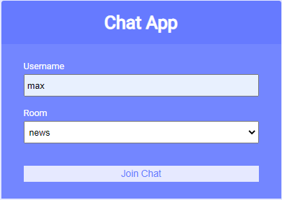
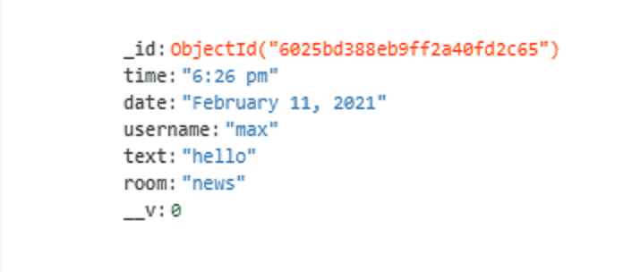

Chat App
Technologies Used:
- HTMl - Used for front-end display.
- Express- Used for running back-end server.
- Mongo DB- Database used to store messages
- Socket.IO - Used to create Web sockets
Description:
The Chat App allows users to enter a username and join a particular room from the list. On entering a room all current users present in the room are displayed and all messageges are displayed that were from the current room. all users present present in the room can see when a particualr user is typing and when a user leaves or joins the room
Socket.IO is used to produce two way connection between users and emit new messages as they are sent. Mongo DB is used to store new messages and fetch past messages in the room to display for users. Express is used to create the server that the application runs on
You can view the github repository here:
Git Repo